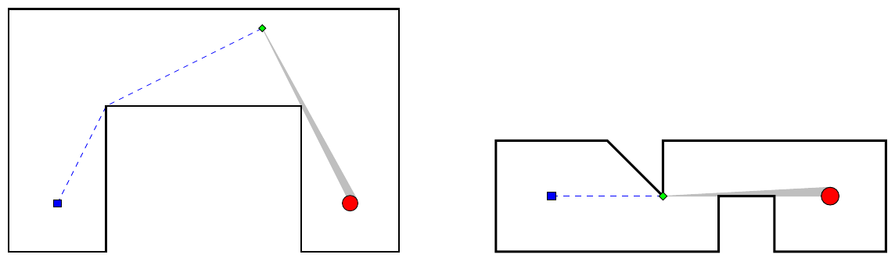

ICPC World Finals 2021 · Problem D
Your local art gallery is about to host an exciting new exhibition of sculptures by world-renowned artists, and the gallery expects to attract thousands of visitors. Unfortunately, the exhibition might also attract the wrong kind of visitors, namely burglars who intend to steal the works of art. In the past, the gallery directors did not worry much about this problem, since their permanent collection is, to be honest, not really worth stealing.
The gallery consists of rooms, and each sculpture in the new exhibition will be placed in a different room. Each room has a security guard and an alarm to monitor the artwork. When an alarm sounds, the guard will run (without leaving the room) from their post to a position where they can see the sculpture directly. This is to check whether the sculpture has in fact been stolen, or whether this is yet another false alarm.
To figure out where to best station the security guard, the gallery directors would like to know how long it takes for the guard to see a given sculpture. They hope that you can help!
Every room is on a single floor, and the layout of the walls can be approximated by a simple polygon. The locations of the guard and the sculpture are distinct points strictly inside the polygon. The sculpture is circular, with a negligibly small (but positive) radius. To verify that the sculpture is still present, the guard needs to be able to see at least half of it.
Figure D.1 illustrates two examples. In each case, the guard starts at the blue square on the left, and the sculpture is located at the red circle on the right. The dotted blue line shows the optimal path for the guard to move. Once the guard reaches the location marked by the green diamond, half of the sculpture can be seen.

The first line of input contains an integer n (3 ≤ n ≤ 100), the number of vertices that describe the polygon. This is followed by n lines each containing two integers x and y (0 ≤ x, y ≤ 1 000), giving the coordinates of the polygon vertices in counterclockwise order. The next line contains two integers xg and yg, which specify the location of the guard. Finally, the last line contains two integers xs and ys, which specify the location of the center of the sculpture. The polygon is simple, that is, its vertices are distinct and no two edges of the polygon intersect or touch, other than consecutive edges which touch at their common vertex. In addition, no two consecutive edges are collinear.
Output the minimum distance that the guard has to move to be able to see at least half the sculpture. Your answer must have an absolute or relative error of at most 10−6.
8 0 0 20 0 20 30 60 30 60 0 80 0 80 50 0 50 10 10 70 10
58.137767414994535
11 0 0 4 0 4 1 5 1 5 0 7 0 7 2 3 2 3 1 2 2 0 2 1 1 6 1
2.0